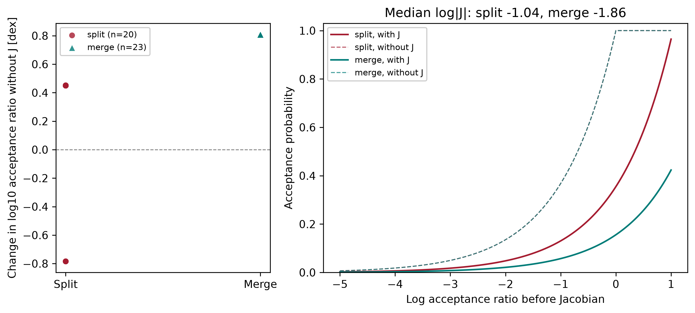
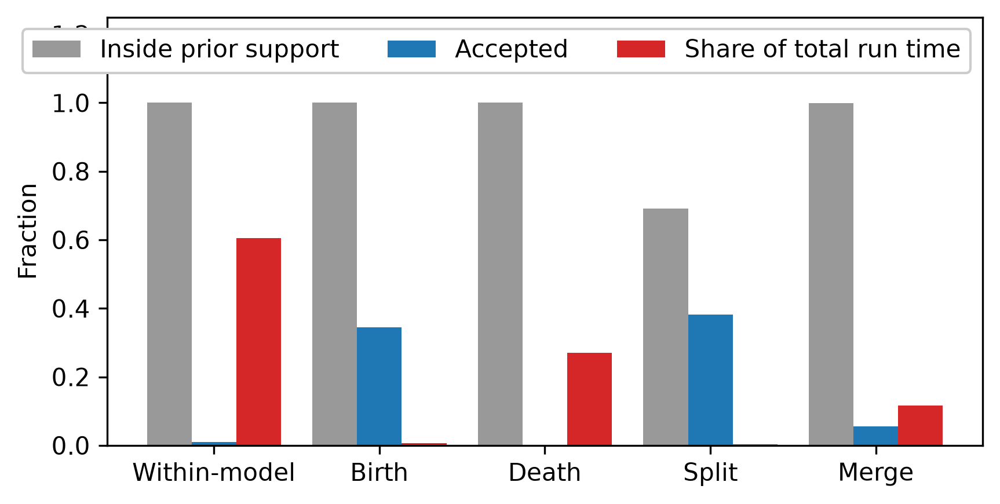

Sampling, proposals, and convergence
PCAT uses one Metropolis-Hastings sampler for fixed-dimensional models and transdimensional catalogs. A sweep selects a proposal, evaluates its candidate state, and accepts or rejects that candidate. The realized proposal type, acceptance probability, and accept/reject result are recorded for every sweep.
Proposal types
Type |
State change |
Main settings |
|---|---|---|
Within-model |
Updates existing parameters without changing the number of elements. It is the only proposal used by default for fixed-dimensional models. |
|
Birth |
Adds an element drawn from its prior or a configured data-informed proposal. |
|
Death |
Removes one existing element. |
Selected with birth moves under |
Split |
Replaces an element with two elements when the element model supports reversible-jump splitting. |
|
Merge |
Replaces a pair of elements with one element when the model supports reversible-jump merging. |
Uses the reverse-proposal probability and Jacobian correction of the split move. |
Jump |
Redraws one existing element from its prior without changing catalog size. |
|
Differential evolution |
Proposes a symmetric within-model step from the difference between two states in a bounded history. |
|
Correlated block |
Updates a configured set of fixed-dimensional parameters together. |
|
Birth, death, split, and merge moves are available only for supported element
models. Their direction can be restricted by the model’s minimum and maximum
element counts. If split or merge is unsupported, set probspmr=0. At a
catalog boundary, PCAT selects only moves that can leave the current state.
Acceptance probability
For a current state x and candidate x', the log Metropolis-Hastings
ratio is
where pi is the posterior density, q is the proposal density, and
J is the reversible-jump Jacobian. PCAT accepts with probability
The within-model random walk and differential-evolution proposals are symmetric, so their proposal-density ratio is one and their Jacobian is one. Birth and death moves include model-count and auxiliary-parameter corrections. Split and merge moves include reverse-move probabilities and the split Jacobian. For a prior-redraw jump, the element prior cancels its proposal density, leaving the likelihood change plus any Hastings correction for a data-informed draw.
The final state stores per-sweep proposal IDs in listpostindxproptype,
accept/reject flags in listpostboolpropaccp, and acceptance probabilities in
listpostaccpprob. The unclipped log acceptance ratio is stored in
listpostaccplprb so it remains available when exponentiation underflows.
Final processing also computes accpwith, accpbrth,
accpdeth, accpsplt, accpmerg, and accpjump from attempted moves.
An acceptance fraction is accepted attempts divided by attempts of that type.
It is a tuning diagnostic, not a target to maximize. Very small steps can have
high acceptance but explore the posterior slowly; large steps can have low
acceptance and waste evaluations.
The proposal_state_animation example uses the native split/merge moves to
show the Jacobian correction. Splitting parent amplitude F into r F and
(1-r) F contributes log|J| = log(F); merging applies its negative. The
figure compares each valid proposal’s acceptance probability with a
counterfactual that holds every other term fixed and removes only log|J|.
This is an algebraic comparison of the same proposals, not a second MCMC chain.


The left panel shows the log-acceptance-ratio shift for each valid proposal. The right panel shows the acceptance curve with the median Jacobian from the run and its no-Jacobian counterfactual.


Proposal acceptance and evaluation cost in the simulated Voigt-line profiling example. The values depend on the model, prior, data, and tuning.
Tuning proposals
probtran defaults to 0.4 when a variable population is present and
0 otherwise. It is the probability of selecting a transdimensional move.
probspmr defaults to half of probtran and sets the fraction of eligible
transdimensional selections allocated to split and merge; the remaining share
is allocated to birth and death. Split and merge directions are balanced when
both are available, with boundary restrictions taking precedence.
probjump and probdemc both default to zero, so those optional moves must
be enabled explicitly.
For an existing model configuration, proposal controls can be added before calling the sampler:
configuration.update(
probtran=0.7,
probspmr=0.4,
probjump=0.1,
probdemc=0.1,
numbdemchist=1000,
booladaptstdp=True,
)
result = pcat.sampling.sample(**configuration)
Start with the model’s native proposal scales and inspect acceptance by move
type, trace behavior, model-count transitions, residuals, and effective sample
sizes. Adjust stdvpropbase or stdvpropelemfire when within-model moves
are too large or too small. Set probpropblock only when correlated blocks
and a matching proposal_correlation are configured. probdemc uses at
least ten history states before it can propose; its default history length is
1,000 and its default scale is 2.38 / sqrt(2 d) for a d-parameter
update.
Burn-in and scale adaptation
numbburn is the number of initial sweeps excluded from retained samples. If
it is omitted, PCAT uses ten percent of numbswep. Set numbsamp or
factthin to control the number of retained samples after burn-in.
booladaptstdp=True adapts within-model proposal scales during burn-in only.
The sampler uses a target acceptance of 0.44 for one-dimensional updates and
0.234 for multivariate updates. Adaptation stops once burn-in ends. Report the
burn-in length and proposal settings with scientific results, and check that
posterior summaries are stable to a longer run or a different seed.
Set boolburntmpr=True to temper the likelihood during the first
factburntmpr fraction of burn-in. The default fraction is 0.75. At tempered
sweep s out of N tempered sweeps, PCAT uses
and evaluates the target as log_prior + beta_s * log_likelihood. The prior
is not tempered. beta_s is stored for every sweep in
listpostfacttmpr and equals one before retained sampling begins. Tempering
can help a chain cross likelihood barriers during burn-in, but it can reduce
local effective sample size and does not guarantee discovery of every mode.
typeopti="hess" is a separate experimental option. It estimates local
finite-difference curvature to initialize proposal scales; it does not perform
gradient descent or optimize the initial state. PCAT currently provides no
gradient-descent burn-in mode.
The Examples page links burn_in_strategies, which compares fixed,
adaptive, and tempered plus adaptive burn-in on correlated and bimodal
simulated targets.
Automatic convergence monitoring
By default PCAT stops after the configured sweep count. Set
boolcheckconv=True to stop after repeated convergence checks. The defaults
are numbsampconvmin=1000 retained samples before the first check,
numbsampconvcheck=250 samples between checks, maxmconvrhat=1.01,
numbsampconveffc=200, and numbconvpass=2 consecutive passing checks.
For one worker PCAT estimates R-hat by splitting the chain in half. With several
workers, it calculates convergence across independent worker chains and stops
them together after they all observe the shared stop signal.
Convergence is assessed using log posterior, element count, persistent element
parameters, or modeled data pixels when no persistent element parameter is
available. Inspect the values saved in gdatfinlpost and the convergence
plots. Automatic stopping does not establish that the likelihood, model, or
priors are scientifically adequate.
With posterior plotting enabled, completed runs write separate figures under
visuals/post/convergence/. Fixed-parameter figures show per-worker traces,
autocorrelation, approximate effective sample size, and cross-worker R-hat.
For transdimensional populations, the figures show catalog-size traces,
autocorrelation, occupancy, within-worker size transitions, and mixing metrics.
Early-versus-late distributions compare each sampled one-dimensional element
feature without assigning identities to elements across birth or death moves.
The approximate effective sample size uses a bounded autocorrelation window;
short runs can yield unstable estimates. A single worker has no cross-worker
R-hat, which is shown as unavailable rather than assigned a value.
To create the figures from a saved posterior without rerunning inference, call
pcat.plotting.plot_posterior_convergence(state, output_directory) after
loading gdatfinlpost with pcat.main.readfile. The figures support
inspection and do not replace checks for multiple modes or model mismatch.
Animations and saved diagnostics
Set makeanim=True and numbswepplot so at least two chain frames are
saved. With frame plotting enabled, PCAT writes the usual posterior animations
from these retained chain states. It also writes proposal_activity.gif,
which shows cumulative proposal attempts and acceptances, and
proposal_sequence.gif, which labels each saved state frame with its sweep,
proposal type, and acceptance result. The sequence animation uses saved frame
intervals rather than every sweep. A rejected proposal remains represented by
the retained chain state.
Set boolmakeanimprop=True to additionally write one candidate frame for
every sweep of worker zero. PCAT renders the frame after evaluating the
candidate and acceptance probability but before an accepted candidate replaces
the current state. proposal_candidates.gif therefore shows accepted and
rejected candidates, including moves outside prior support. Each frame compares
current and candidate predictions and unit-prior coordinates and reports the
proposal type, acceptance probability, decision, log posterior values,
proposal-density ratio, and Jacobian.
Candidate frames are proposal diagnostics, not posterior samples. The option is
off by default because it performs plotting and writes one PNG per sweep. Its
runtime and storage scale linearly with numbswep. Use short runs for proposal
inspection, then disable it for production inference. The
proposal_state_animation example produces both retained-state and
every-candidate animations from the same simulated Voigt-line run.
The proposal-profiling example includes a visual comparison of acceptance and cost above and writes proposal activity with its run. See Outputs and diagnostics for the output directory and persisted diagnostics, and Capabilities for the maintained model families.